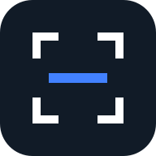

Your document, ready to share.
Scan a page or add photos. Create one clean PDF.
▣
Start with your first page
Use your camera or choose images from your device.
Your images stay on this device. No document upload.

MYORYXSCAN STUDIOScan a page or add photos. Create one clean PDF.
Use your camera or choose images from your device.
Your images stay on this device. No document upload.